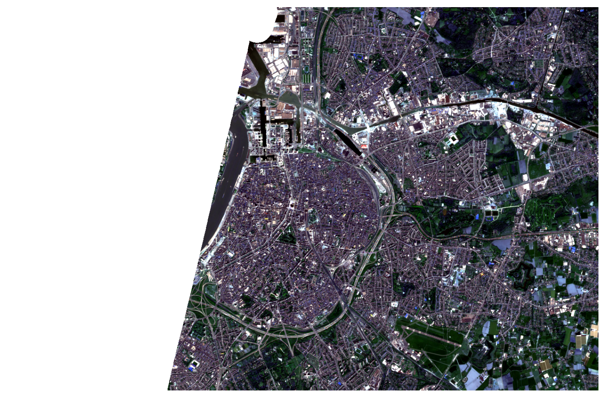

import openeo
connection = openeo.connect("https://openeofed.dataspace.copernicus.eu")openEO Cookbook
This is the openEO cookbook that you can refer to to get a first idea on how to solve problems with openEO in the three client languages Python, R and JavaScript. It describes how to implement simple use cases in a pragmatic way.
We recommend exploring this page if you want to use any of the openEO client libraries. It is not a complete reference, but rather a collection of examples that can be used as a starting point for your work.
The guide requires a basic understanding of the Remote Sensing and programming concepts of the respective client language.
1. Explore openEO backend
In this chapter, we will explore the openEO backend and its capabilities. We will connect to a backend, explore the available collections and processes, and check the supported output formats.
Prior to running the code examples, make sure you have installed the openEO client library for your preferred programming language (Python, R, or JavaScript) and have set up the necessary authentication credentials to connect to the backend.
Tip
As with any Python project, it is recommended to work in some kind of virtual environment (venv, virtualenv, conda, docker, …) to avoid interference with other projects or applications.
The openEO Python client library is available on PyPI and can easily be installed with a tool like pip, for example:
pip install openeoThe client library is also available on Conda Forge and can be easily installed in a conda environment, for example:
conda install -c conda-forge openeoBefore installing the openEO R-client module, ensure you have at least R version 3.6. Older versions might also work, but have not been tested.
Stable releases can be installed from CRAN:
install.packages("openeo")
TipInstalling the development version
To install the development version, follow the GitHub installation instructions. This version might include additional features but could be less stable.
Ensure ‘devtools’ is installed; if not, use install.packages("devtools").
Now, install_github from the devtools package can be used to install the development version:
devtools::install_github(repo="Open-EO/openeo-r-client", dependencies=TRUE, ref="develop")If an error occurs, there may have been an issue during the installation process. Please review the requirements to troubleshoot the problem.
The openEO JavaScript Client can be used in all modern browsers (excludes Internet Explorer) and all maintained Node.js versions (>= 10.x). It can also been used for mobile app development with the Ionic Framework, for example.
The easiest way to try out the client is using one of the examples. Alternatively, you can create an HTML file and include the client with the following HTML script tags:
<script src="https://cdn.jsdelivr.net/npm/axios@0.21/dist/axios.min.js"></script>
<script src="https://cdn.jsdelivr.net/npm/@openeo/js-client@2/openeo.min.js"></script>This gives you a minified version for production environments. If you’d like a better development experience, use the following code:
<script src="https://cdn.jsdelivr.net/npm/axios@0.21/dist/axios.js"></script>
<script src="https://cdn.jsdelivr.net/npm/@openeo/js-client@2/openeo.js"></script>If you are working on a Node.js application or you are using a Node.js-based build tool for web development (e.g. Webpack), you can install the client via npm by using the following command:
npm install @openeo/js-clientAfterwards you can load the library. Depending on whether you are directly working in Node.js or are just using a Node.js build tool, the import can be different. Please inform yourself which import is suited for your project.
This is usually used directly in Node.js:
const { OpenEO } = require('@openeo/js-client');This may be used in build tools such as Webpack:
import { OpenEO } from '@openeo/js-client';In this cookbook, we use the openEO federation backend of the Copernicus Data Space Ecosystem, available at https://openeofed.dataspace.copernicus.eu. This backend also provides access to partner resources. For more information on different openEO Backends, please refer here.
Once we are sure on the backend we want to use, we can connect to it using the openEO client library.
library(openeo)
connection <- connect(host = "https://openeofed.dataspace.copernicus.eu")var connection = await OpenEO.connect("https://openeofed.dataspace.copernicus.eu");The Connection object is the central gateway to interact with the back-end: listing collections and processes, building algorithms, and executing and monitoring batch jobs.
NoteAuthentication
Please note that basic metadata about collections and processes is publicly available and does not require being logged in. However, for downloading EO data or running processing workflows, you will need to authenticate.
connection.authenticate_oidc()
login()If you have included the library using HTML script tags, then you need to include the following OIDC client before the openEO client:
<script src="https://cdn.jsdelivr.net/npm/oidc-client@1/lib/oidc-client.min.js"></script>No further action is required, if you have installed the client via npm.
The first time this is called, you will be prompted to visit a URL to complete the login flow using your CDSE credentials. For more information on Authentication, please refer to the Authentication section of the documentation.
1.2 Explore available collections
EO data in openEO are available as collections, which serve as the input for your processing jobs. Collections can be listed and inspected programmatically, or browsed via the openEO Web Editor.
connection.list_collections()Similarly, you can get detailed metadata for a specific collection using the describe_collection method. For example, to get metadata for the Sentinel-2 Level 2A collection:
# Get detailed metadata for a specific collection
connection.describe_collection("SENTINEL2_L2A")# List all available collections
collections <- list_collections()
print(collections)
# Get detailed metadata for a specific collection
describe_collection("SENTINEL2_L2A")
Tip
When using RStudio, metadata can be displayed as a web page in the viewer panel:
collection_viewer(x = "SENTINEL2_L2A")// List all collection IDs and summaries
var response = await con.listCollections();
response.collections.forEach(collection => {
console.log(`${collection.id}: ${collection.summary}`);
});
// Get full metadata for a specific collection
console.log(await con.describeCollection("SENTINEL2_L2A"));1.3 Explore available processes
Processes in openEO are operations applied to EO data — for example, calculating the mean of an array, masking pixels outside a polygon, or computing spatial aggregations. The output of one process can feed into the next, forming a process graph.
Tip
In R and JavaScript it is useful to assign a process-builder helper object to a variable to easily access all openEO processes. In Python, a helper import is available too.
# Import ProcessBuilder for use in child processes
from openeo.processes import ProcessBuilderNote: Functions used inside child processes (e.g. reducers, apply callbacks) are instances of this ProcessBuilder import.
# Assign the process-builder helper object to "p"
p <- processes()Note: In all R code in this cookbook, p is used to select openEO processes.
// Assign the process-builder helper object to "builder"
var builder = await con.buildProcess();Note: In all JavaScript code in this cookbook, builder is used to select openEO processes.
# List all available processes with metadata
connection.list_processes()It is often easier to consult the process listing page or the openEO Web Editor sidebar.
# List all available processes with full metadata
processes <- list_processes()
print(processes)
# Print metadata for a specific process
print(processes$load_collection)
Tip
In RStudio, use process_viewer() to open an interactive process browser:
process_viewer("load_collection")
process_viewer(processes) # view all processesvar response = await con.listProcesses();
response.processes.forEach(process => {
console.log(`${process.id}: ${process.summary}`);
});
// Get metadata for a specific process
console.log(await con.describeProcess("apply"));1.4 Explore supported output formats
The openEO API supports a variety of output formats for saving the results of processing workflows.
connection.list_file_formats()formats <- list_file_formats()
print(formats)var formats = await con.listFileFormats();
console.log(formats);2. Load Sentinel-2 RGB composite
In this chapter, we download a GeoTIFF and a quicklook RGB image from Sentinel-2 data for the region of Antwerp, Belgium. We load the data from the openEO federation backend, apply cloud masking, reduce the time dimension to a single image, and save the results.
2.1 Load a collection
Before loading a collection, confirm the exact collection ID and band names (see backend collections). Band naming can differ subtly between backends (e.g. B8 vs. B08) — always check the collection description.
We will load the green, red and blue bands (B02, B03, B04) from Sentinel-2 Level 2A.
import openeo
connection = openeo.connect("https://openeofed.dataspace.copernicus.eu")
connection.authenticate_oidc()
# Spatial and temporal extent
bbox = {"west": 4.3, "south": 51.2, "east": 4.6, "north": 51.4}
temporal_extent = ["2021-04-26", "2021-04-30"]
# Load the datacube
s2_rgb = connection.load_collection(
"SENTINEL2_L2A",
spatial_extent=bbox,
temporal_extent=temporal_extent,
bands=["B02", "B03", "B04"],
max_cloud_cover=85,
)library(openeo)
connection <- connect(host = "https://openeofed.dataspace.copernicus.eu")
login()
p <- processes()
# Spatial and temporal extent
bbox <- list(west = 4.3, south = 51.2, east = 4.6, north = 51.4)
temporal_extent <- c("2021-04-26", "2021-04-30")
# Load the datacube
s2_rgb <- p$load_collection(
id = "SENTINEL2_L2A",
spatial_extent = bbox,
temporal_extent = temporal_extent,
bands = c("B02", "B03", "B04")
)var con = await OpenEO.connect("https://openeofed.dataspace.copernicus.eu");
await con.authenticateOIDC();
var builder = await con.buildProcess();
// Spatial and temporal extent
let bbox = {west: 4.3, south: 51.2, east: 4.6, north: 51.4};
let temporal_extent = ["2021-04-26", "2021-04-30"];
// Load the datacube
// Note: JavaScript uses positional arguments — keep to the order defined in the openEO processes docs
var s2_rgb = builder.load_collection(
"SENTINEL2_L2A",
bbox,
temporal_extent,
["B02", "B03", "B04"]
);
Notefiltering
It is possible to filter the data once the collection is loaded, using the filter_bbox and filter_temporal, processes. However, it is recommended to filter as early as possible; preferably directly in load_collection to avoid loading unnecessary data.
2.2 Apply cloud masking
Sentinel-2 L2A includes a Scene Classification Layer (SCL) band that can be used to mask clouds and other non-surface pixels. We load the SCL band separately, build a mask, resample it to match the spatial resolution of the RGB bands (10 m vs 20 m), and apply it.
scl = connection.load_collection(
"SENTINEL2_L2A",
temporal_extent=temporal_extent,
spatial_extent=bbox,
bands=["SCL"],
max_cloud_cover=85,
)
mask = scl.process(
"to_scl_dilation_mask",
data=scl,
kernel1_size=17,
kernel2_size=77,
mask1_values=[2, 4, 5, 6, 7],
mask2_values=[3, 8, 9, 10, 11],
erosion_kernel_size=3
)
# Create a cloud-free mosaic
s2_rgb_masked = s2_rgb.mask(mask)scl <- p$load_collection(
id = "SENTINEL2_L2A",
temporal_extent = temporal_extent,
spatial_extent = bbox,
bands = c("SCL")
)
mask <- p$to_scl_dilation_mask(
data = scl,
kernel1_size = 17,
kernel2_size = 77,
mask1_values = c(2, 4, 5, 6, 7),
mask2_values = c(3, 8, 9, 10, 11),
erosion_kernel_size = 3
)
s2_rgb_masked <- p$mask(data = s2_rgb, mask = mask)var scl = builder.load_collection(
"SENTINEL2_L2A",
bbox,
temporal_extent,
["SCL"]
);
var mask = builder.to_scl_dilation_mask(
scl,
17,
77,
[2, 4, 5, 6, 7],
[3, 8, 9, 10, 11],
3
);
var s2_rgb_masked = builder.mask(s2_rgb, mask);2.3 Reduce the data to a single image
As we are only interested in a single RGB image, we can reduce the time dimension of the datacube to a single image. We will use the max_time process to select the maximum value for each pixel over time. Alternatively, we can also use reduce_dimension with a max reducer to achieve the same result.
s2_composite = s2_rgb_masked.max_time()max_reducer <- function(data, context) {
p$max(data = data)
}
s2_composite <- p$reduce_dimension(
data = s2_rgb_masked,
reducer = max_reducer,
dimension = "t"
)var max_reducer = function(data) { return this.max(data); };
var s2_composite = builder.reduce_dimension(s2_rgb_masked, max_reducer, "t");
TipChild Processes
Here, we used a child process: A function that is called by (or passed to) another function, and then works on a subset of the datacube (somewhat similar to the concept of callbacks in JavaScript). In this case: We want reduce_dimension to use the max function to select the maximum value for each pixel over time. Not any function can be used like this, it must be defined by openEO, of course.
All clients have more or less different specifics when defining a child process. As you can observe directly below, one way to define one is to define the function directly inside the parent process.
Note: In python, the child process can be a string; In R, we can select a child process from the p helper object; In JavaScript, arrow functions can be used as child processes.
2.4 Save the data to a GeoTIFF
For users who want to download the data for further analysis, we can save the result as a GeoTIFF file. The openEO API supports various output formats as mentioned in section 1.4. In this example, we will save as the GeoTIFF file.
s2_composite.download("s2-rgb-composite.tiff")formats <- list_file_formats()
result <- p$save_result(
data = s2_composite,
format = formats$output$GTIFF
)
job <- create_job(graph = result, title = "S2 RGB Composite")
start_job(job = job)
# Download when finished
download_results(job = job, folder = "./results")var result = builder.save_result(s2_composite, "GTiff");
var job = await con.createJob(result, "S2 RGB Composite");
await job.startJob();
// Monitor and download when finished
let stopFn = job.monitorJob(async (job, logs) => {
if (job.status === "finished") {
var urls = await job.listResults();
urls.forEach(url => console.log(`Download from: ${url.href}`));
}
});
TipVisualise the RGB composite

3. Calculate NDVI time series
In this chapter, we will calculate the NDVI time series for a specific area of interest. We will load the Sentinel-2 collection, filter it by date and location, calculate NDVI for each image, apply a threshold, aggregate the data spatially, and export the results as JSON or CSV.
3.1 Load and filter collection
As in the previous chapter, we will load the Sentinel-2 collection and filter it by date and location. We will also select the necessary bands for NDVI calculation (B04 and B08).
bbox = {"west": 5.14, "south": 51.17, "east": 5.17, "north": 51.19}
temporal_extent = ["2021-02-01", "2021-04-30"]
datacube = connection.load_collection(
"SENTINEL2_L2A",
spatial_extent=bbox,
temporal_extent=temporal_extent,
bands=["B04", "B08", "SCL"],
max_cloud_cover=85,
)bbox <- list(west = 5.14, south = 51.17, east = 5.17, north = 51.19)
temporal_extent <- c("2021-02-01", "2021-04-30")
datacube <- p$load_collection(
id = "SENTINEL2_L2A",
spatial_extent = bbox,
temporal_extent = temporal_extent,
bands = c("B04", "B08", "SCL")
)var datacube = builder.load_collection(
"SENTINEL2_L2A",
{west: 5.14, south: 51.17, east: 5.17, north: 51.19},
["2021-02-01", "2021-04-30"],
["B04", "B08", "SCL"]
);3.2 Perform NDVI calculation
Band math is a common operation in remote sensing, here we calculate NDVI (Normalized Difference Vegetation Index) using the red and near-infrared bands. In other words, it refers to computations that involve multiple bands, like indices (Normalized Difference Vegetation Index, Normalized Burn Ratio etc.).
In openEO, this goes along with using for example reduce_dimension over the bands dimension. In this process, a new pixel value is calculated from the values of different bands using a given formula (the actual bandmath), to then eliminate the bands dimension alltogether. If e.g. a cube contains a red and a nir band in its bands dimension and we reduce said dimension with a formula for the NDVI, that cube afterwards contains NDVI values, but no bands dimension anymore.
Given that it is the most common use case, openEO has predefined processes that cover the math for us and only need to be given the correct input. There even is a function ndvi that masks all details and only takes a datacube and the bandnames as input.
In this example, we will use the ndvi process to calculate NDVI for each image in the datacube.
The process can detect the red and near-infrared band based on metadata and doesn’t need bandname input (but band names can be passed to calculate other normalized differences). Also, by supplying the optional parameter target_band we can decide if we want to get a reduced cube with NDVI values and no bands dimension as result, or if we want to append the new NDVI band to the existing bands of our input cube. If we choose the latter, we only need to supply a name for that new NDVI band.
ndvi_cube = datacube.ndvi(nir="B08", red="B04")ndvi_cube <- p$ndvi(data = datacube, nir = "B08", red = "B04")var ndvi_cube = builder.ndvi(datacube, "B08", "B04");3.3 Apply threshold
In this scenario we want an image that contains all NDVI values below 0.2 (non-vegetated areas). We will use the mask process to apply the threshold.
ndvi_masked = ndvi.mask(ndvi < 0.2)ndvi_masked <- p$apply(
data = ndvi,
process = function(data, context) {
p$if_(
condition = p$lt(x = data, y = 0.2),
accept = float("NaN"),
reject = data
)
}
)var ndvi_masked = builder.apply(ndvi, function(data) {
return this.if_(this.lt(data, 0.2), null, data);
});3.4 Spatially aggregate the data
To aggregate over certain geometries, we use the process aggregate_spatial. It takes valid GeoJSON as input. We can pass a GeoJSON FeatureCollection in Python and JavaScript, but we need to introduce two packages in R, sf and geojsonsf, to convert the FeatureCollection string to a simple feature collection.
ndvi_ts = ndvi_masked.aggregate_spatial(
geometries={"type": "Polygon", "coordinates": [[[5.14, 51.17],[5.17, 51.17],[5.17, 51.19],[5.14, 51.19],[5.14, 51.17]]]},
reducer=lambda data: data.mean()
)# load sf and geojsonsf
library(sf)
library(geojsonsf)
# convert to sf object
aoi_geom <- geojson_sf('{"type": "Polygon", "coordinates": [[[5.14, 51.17],[5.17, 51.17],[5.17, 51.19],[5.14, 51.19],[5.14, 51.17]]]}')
# add any attribute as a workaround, empty simple features are not accepted
aoi_geom$anAttribute <- c(4, 5)
ndvi_ts <- p$aggregate_spatial(
data = ndvi_masked,
geometries = aoi_geom,
reducer = function(data, context) { p$mean(data = data) }
)var aoi = {
type: "Polygon",
coordinates: [[[5.14, 51.17],[5.17, 51.17],[5.17, 51.19],[5.14, 51.19],[5.14, 51.17]]]
};
var mean_reducer = function(data) { return this.mean(data); };
var ndvi_ts = builder.aggregate_spatial(ndvi_masked, aoi, mean_reducer);3.5 Export as JSON or CSV
Alternative to directly downloading the result using the download method, we can use the save_result process to save the result in a specific format. This method gives us more flexibility in terms of output formats and options. In this example, we will save the result as a JSON file.
result_json = ndvi_ts.save_result(format="JSON")
result_json.create_job(title="NDVI Time Series").start_and_wait().download_results(folder="./results")result_json <- p$save_result(
data = ndvi_ts,
format = formats$output$JSON
)
job <- create_job(graph = result_json, title = "NDVI Time Series")
start_job(job = job)
download_results(job = job, folder = "./results")var result = builder.save_result(ndvi_ts, "JSON");
var job = await con.createJob(result, "NDVI Time Series");
await job.startJob();
await job.downloadResults({ folder: "./results" });4. Calculate EVI and Export as GeoTIFF
This chapter demonstrates a full end-to-end example: calculating the Enhanced Vegetation Index (EVI) from Sentinel-2 as band math, applying a vegetation-only cloud/class mask, reducing the time dimension, and downloading the result.
The formula for the Enhanced Vegetation Index is a bit more complicated than the NDVI one and contains constants. But we also don’t necessarily need an openEO defined function and can concentrate on implementing a more complex formula. Here’s the most efficient way to do this, per client.
Below we’ll observe a thorough explanation of how to calculate an EVI.
EVI = 2.5 × (NIR − Red) / (NIR + 6 × Red − 7.5 × Blue + 1)
4.1 Load and Filter Collection
import openeo
connection = openeo.connect("https://openeofed.dataspace.copernicus.eu")
connection.authenticate_oidc()
datacube = connection.load_collection(
"SENTINEL2_L2A",
spatial_extent={"west": 5.14, "south": 51.17, "east": 5.17, "north": 51.19},
temporal_extent=["2021-02-01", "2021-04-30"],
bands=["B02", "B04", "B08"],
max_cloud_cover=85,
)library(openeo)
connection <- connect(host = "https://openeofed.dataspace.copernicus.eu")
login()
p <- processes()
datacube <- p$load_collection(
id = "SENTINEL2_L2A",
spatial_extent = list(west = 5.14, south = 51.17, east = 5.17, north = 51.19),
temporal_extent = c("2021-02-01", "2021-04-30"),
bands = c("B02", "B04", "B08")
)const { OpenEO, Formula } = require('@openeo/js-client');
var con = await OpenEO.connect("https://openeofed.dataspace.copernicus.eu");
await con.authenticateOIDC();
var builder = await con.buildProcess();
var datacube = builder.load_collection(
"SENTINEL2_L2A",
{west: 5.14, south: 51.17, east: 5.17, north: 51.19},
["2021-02-01", "2021-04-30"],
["B02", "B04", "B08"]
);4.2 Compute EVI
blue = datacube.band("B02") * 0.0001
red = datacube.band("B04") * 0.0001
nir = datacube.band("B08") * 0.0001
evi_cube = 2.5 * (nir - red) / (nir + 6.0 * red - 7.5 * blue + 1.0)evi_cube <- p$reduce_dimension(
data = datacube,
reducer = function(data, context) {
blue <- p$array_element(data, index = 0L)
red <- p$array_element(data, index = 1L)
nir <- p$array_element(data, index = 2L)
blue_r <- p$multiply(x = blue, y = 0.0001)
red_r <- p$multiply(x = red, y = 0.0001)
nir_r <- p$multiply(x = nir, y = 0.0001)
numerator <- p$subtract(x = nir_r, y = red_r)
denominator <- p$add(
x = p$subtract(x = p$add(x = nir_r, y = p$multiply(x = 6.0, y = red_r)),
y = p$multiply(x = 7.5, y = blue_r)),
y = 1.0
)
p$multiply(x = 2.5, y = p$divide(x = numerator, y = denominator))
},
dimension = "bands"
)var evi_reducer = function(data) {
var blue = this.multiply(this.array_element(data, 0), 0.0001);
var red = this.multiply(this.array_element(data, 1), 0.0001);
var nir = this.multiply(this.array_element(data, 2), 0.0001);
var numerator = this.subtract(nir, red);
var denominator = this.add(
this.subtract(this.add(nir, this.multiply(6.0, red)), this.multiply(7.5, blue)),
1.0
);
return this.multiply(2.5, this.divide(numerator, denominator));
};
var evi_cube = builder.reduce_dimension(datacube, evi_reducer, "bands");4.3 Apply SCL Mask (Vegetation Only)
s2_scl = connection.load_collection(
"SENTINEL2_L2A",
spatial_extent={"west": 5.14, "south": 51.17, "east": 5.17, "north": 51.19},
temporal_extent=["2021-02-01", "2021-04-30"],
bands=["SCL"],
)
scl_band = s2_scl.band("SCL")
mask = (scl_band != 4) # keep only vegetation class
mask_resampled = mask.resample_cube_spatial(evi_cube)
evi_cube_masked = evi_cube.mask(mask_resampled)s2_scl <- p$load_collection(
id = "SENTINEL2_L2A",
spatial_extent = list(west = 5.14, south = 51.17, east = 5.17, north = 51.19),
temporal_extent = c("2021-02-01", "2021-04-30"),
bands = c("SCL")
)
scl_mask <- p$apply(
data = s2_scl,
process = function(data, context) { p$neq(x = data, y = 4) }
)
scl_mask_resampled <- p$resample_cube_spatial(data = scl_mask, target = evi_cube)
evi_cube_masked <- p$mask(data = evi_cube, mask = scl_mask_resampled)var s2_scl = builder.load_collection(
"SENTINEL2_L2A",
{west: 5.14, south: 51.17, east: 5.17, north: 51.19},
["2021-02-01", "2021-04-30"],
["SCL"]
);
var scl_mask = builder.apply(s2_scl, function(data) {
return this.neq(data, 4);
});
var scl_mask_resampled = builder.resample_cube_spatial(scl_mask, evi_cube);
var evi_cube_masked = builder.mask(evi_cube, scl_mask_resampled);4.4 Download the Result as GeoTIFF
We first reduce the temporal dimension to a single composite image, then download it.
evi_composite = evi_cube_masked.max_time()
evi_composite.download("evi-composite.tiff")evi_composite <- p$reduce_dimension(
data = evi_cube_masked,
reducer = function(data, context) { p$max(data = data) },
dimension = "t"
)
formats <- list_file_formats()
result <- p$save_result(data = evi_composite, format = formats$output$GTIFF)
job <- create_job(graph = result, title = "EVI Composite GeoTIFF")
start_job(job = job)
download_results(job = job, folder = "./results")var max_reducer = function(data) { return this.max(data); };
var evi_composite = builder.reduce_dimension(evi_cube_masked, max_reducer, "t");
var result = builder.save_result(evi_composite, "GTiff");
await con.downloadResult(result, "evi-composite.tiff");5. User-Defined Functions (UDFs)
While openEO supports a wide range of pre-defined processes and allows to build more complex user-defined processes from them, you sometimes need operations or algorithms that are not (yet) available or standardized as openEO processes. User-Defined Functions (UDF) is an openEO feature (through the run_udf process) that aims to fill that gap by allowing a user to express (a part of) an algorithm as a Python/R/… script to be run back-end side.
Though several types of algorithms can be used as UDF applications, in this example, we showcase a simple example of how to work with UDF.
5.1 Load and Filter Collection
import openeo
connection = openeo.connect("https://openeofed.dataspace.copernicus.eu")
connection.authenticate_oidc()
datacube = connection.load_collection(
"SENTINEL2_L2A",
spatial_extent={"west": 5.14, "south": 51.17, "east": 5.17, "north": 51.19},
temporal_extent=["2022-05-01", "2022-05-30"],
bands=["B04", "B03", "B02"],
max_cloud_cover=85,
)
library(openeo)
connection <- connect(host = "https://openeofed.dataspace.copernicus.eu")
login()
p <- processes()
datacube <- p$load_collection(
id = "SENTINEL2_L2A",
spatial_extent = list(west = 5.14, south = 51.17, east = 5.17, north = 51.19),
temporal_extent = c("2022-05-01", "2022-05-30"),
bands = c("B04", "B03", "B02")
)const { OpenEO, Formula } = require('@openeo/js-client');
var con = await OpenEO.connect("https://openeofed.dataspace.copernicus.eu");
await con.authenticateOIDC();
var builder = await con.buildProcess();
var datacube = builder.load_collection(
"SENTINEL2_L2A",
{west: 5.14, south: 51.17, east: 5.17, north: 51.19},
["2022-05-01", "2022-05-30"],
["B04", "B03", "B02"]
);5.2 Reduce the data to a single image
Next, we will reduce the time dimension of the datacube to a single image using the max reducer.
datacube = datacube.reduce_dimension(dimension="t", reducer="max")datacube <- p$reduce_dimension(
data = datacube,
reducer = function(data, context) { p$max(data = data) },
dimension = "t"
)var max_reducer = function(data) { return this.max(data); };
var datacube = builder.reduce_dimension(datacube, max_reducer, "t");5.3 Apply a User-Defined Function (UDF)
Here the UDF code shown in the following cell does the value rescaling.
# Build a UDF object from an inline string with Python source code.
udf = openeo.UDF(
"""
from openeo.udf import XarrayDataCube
def apply_datacube(cube: XarrayDataCube, context: dict) -> XarrayDataCube:
array = cube.get_array()
array.values = 0.0001 * array.values
return cube
"""
# Apply the UDF to a cube.
rescaled_cube = datacube.apply(process=udf)# Build a UDF object from an inline string with R source code.
udf <- openeo::UDF(
"
apply_datacube <- function(cube, context) {
array <- cube$get_array()
array$values <- 0.0001 * array$values
return(cube)
}
"
)
rescaled_cube <- p$apply(data = datacube, process = udf)// Build a UDF object from an inline string with JavaScript source code.
var udf = new OpenEO.UDF(
`
function apply_datacube(cube, context) {
let array = cube.get_array();
array.values = array.values.map(v => 0.0001 * v);
return cube;
}
`
);
// Apply the UDF to a cube.
var rescaled_cube = datacube.apply(process=udf);5.4 Download the Result as GeoTIFF
Finally, we will download the result as a GeoTIFF file.
rescaled_cube.download("rescaled_cube.tiff")formats <- list_file_formats()
result <- p$save_result(data = rescaled_cube, format = formats$output$GTIFF)
job <- create_job(graph = result, title = "Rescaled Cube GeoTIFF")
job <- start_job(job = job)
download_results(job = job, folder = "./results")var result = builder.save_result(rescaled_cube, "GTiff");
var job = await con.createJob(result, "Rescaled Cube GeoTIFF");
await job.startJob();
// Monitor and download when finished
await job.downloadResults({ folder: "./results" });Ideally, it allows you to embed existing Python/R/… implementations in an openEO workflow (with some necessary “glue code”). However, it is recommended to try to do as much pre- or postprocessing with pre-defined processes before blindly copy-pasting source code snippets as UDFs. Pre-defined processes are typically well-optimized by the backend, while UDFs can come with a performance penalty and higher development/debug/maintenance costs. For more information, see the UDF documentation.
You have feedback or noticed an error? Feel free to open an issue in the GitHub repository or use the other communication channels.
TipUseful links
- openEO Web Editor — visually build and execute workflows
- About openEO to learn more about the openEO initiative
- openEO processes documentation for a complete reference of all available processes
- openEO Web Editor to visually build and execute processing workflows